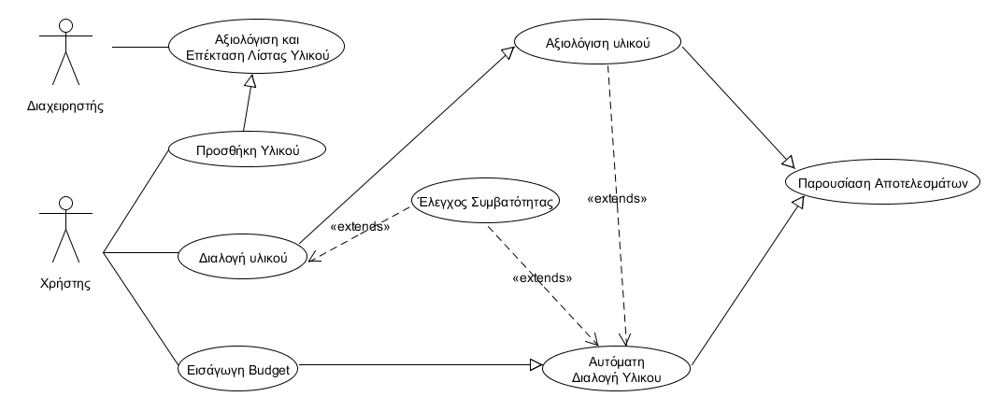

(name subject to change)
Project για το μάθημα της Τεχνολογίας Λογισμικού 2015.
Οικονομικό Πανεπιστήμιο Αθηνών
p3120122 Θεοδώρητος Μπιζμπιάνος
p3120107 Παναγιώτα Μενούνου
p3100190 Aθανάσιος Τσιακούλιας Μανεττάς
Σκοπός του συστήματος είναι να παράγει πλήρεις λίστες με κομμάτια υλικού pc, συμβατά μεταξύ τους, με σκοπό στη συνέχεια ο χρήστης να αγοράσει τα parts, και να χτίσει κομμάτι κομμάτι έναν σταθερό υπολογιστή.
Ο Χρήστης έχει πρόσβαση σε αυτή τη λειτουργία με 2 τρόπους:
Εισαγωγή Budget:
Ο Χρήστης εδώ εισάγει το budget του (δηλαδή ποσά χρήματα είναι διατεθειμένος να ξοδέψει) και το σύστημα δημιουργεί τη λίστα με τα συμβατά parts.
Manual διαλογή υλικού:
O Χρήστης εδώ διαλέγει ένα ένα τα parts, βήμα προς βήμα . Το πρόγραμμα φροντίζει κατά τη διαδικασία διαλογής, τα parts που σε κάθε βήμα να είναι συμβατά με τα parts που ήδη έχει διαλέξει. Στο τέλος τις διαδικασίας το πρόγραμμα κάνει evaluate (στην ουσία βαθμολογεί) την επιλογή του χρήστη, προσθέτει τις άξιες των parts, παρουσιάζοντας του την τελική τιμή και του δίνει τη δυνατότητα να τρέξει την αυτόματη λειτουργιά για την τελική αξία του build που έφτιαξε.
Και στις 2 περιπτώσεις
Υπάρχουν διαφορετικές παράμετροι για την επιλογη και τη βαθμολόγηση parts για normal / gaming / enterprise και professional ανάγκες.
Τα parts θα είναι αποθηκευμένα σε αρχεία που θα ανανεώνονται από τον admin κάθε εξάμηνο η σε κάθε νέα κυκλοφορία υλικού η του προγράμματος. Θα έχουν μοναδικό κωδικό, όνομα, τιμή, compatibility values (πχ Type: AMD, Socket:AM2+) τα οποία θα χρησιμοποιούνται στη βαθμολόγηση μετά. Κάθε part θα έχει επίσης και μοναδικό URL στο Skroutz.gr. Η αναγραφόμενη τιμή των parts θα είναι ενδεικτική της άξιας του υλικού στην περίοδο αυτή.
Ο χρήστης έχει και τη δυνατότητα να εισάγει αρχεία (υλικό) στη βάση για προσωπική, προσωρινή χρήση. Τα αρχεία αυτά πρέπει να αξιολογηθούν αργότερα από τον Διαχειριστή του συστήματος, και να μπουν στη βάση.
Με βάση τα compatibility values των κομματιών του υλικού, ο έλεγχος συμβατότητας θα μας επιστρέφει εάν κάθε κομμάτι είναι συμβατό με μια λίστα από άλλα κομμάτια. Και προφανώς Χρησιμοποιείται και στις 2 περιπτώσεις χρήσης
Με βάση τις ανάγκες του χρήστη (που μας δίνει πάντα σαν παράμετρο στο πρώτο βήμα) η αξιολόγηση υλικού βαθμολογεί το τελικό αποτέλεσμα στο σύνολο του.
Τέλος, η παρουσίαση αποτελεσμάτων παρουσιάζει τη λίστα υλικού, δίνει την επιλογή στο χρήστη να ξανατρέξει το πρόγραμμα με άλλες παραμέτρους η να ανακατευθύνει στο Skroutz.gr για την αγορά των pc parts.
